Connected intelligence
Projects
Fantasy War RoomNFL intelligence · Draft engine
Active
BastionDecision intelligence
Connected
NowySystemsOperations · Platform
Core

NOVA by NowySystemsNowy Operational Virtual Assistant
What should we work on?
Connected intelligence
NOVA attention
Ubuntu server activation remains to be completed.
Fantasy War Room is ready for the first full NOVA-triggered smoke test.
Recent execution
Bridge code merged into NSB.
Daily NFL roster truth workflow installed.
Credential and service wiring pending.
System